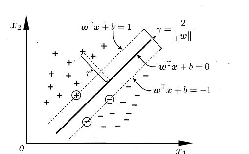
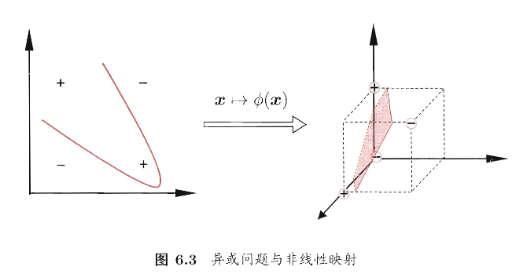
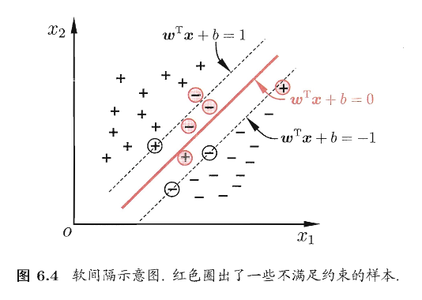
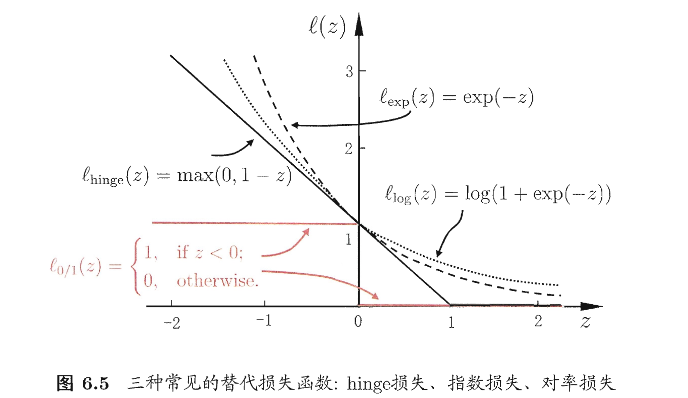
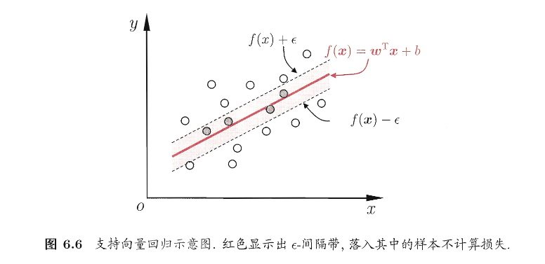
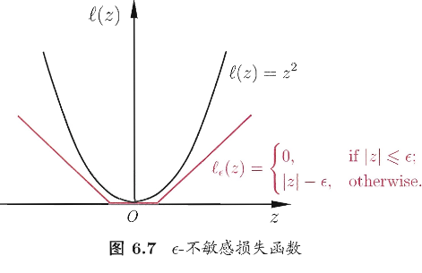

第六章 支持向量机
Note
支持向量机(SVM)是一种常用的 监督学习模型，主要用于分类和回归问题。
之前介绍过，监督学习模型就是通过已有的标注数据来训练模型，以便在未来对未见过的数据进行预测或分类
它的基本目标是 找到一个最佳的决策边界（或者说超平面），使得不同类别的数据点被尽可能清晰地区分开来。
具体来说，SVM可以通过以下几个方面来进行解释：
- 分类问题：SVM通常用于分类问题，尤其是当数据可以通过一个平面或超平面分隔成不同类别时。它的目标是寻找一个最佳超平面，最大化类别之间的间隔，确保不同类别的样本距离该超平面的距离尽可能远，从而提高分类的准确性和泛化能力
- 回归问题：SVM应用于回归问题称为支持向量回归（SVR）。在回归任务中，SVM通过寻找一个平面，使得大部分数据点都位于该平面附近，但对于噪声数据的敏感度比较低
- 核函数的使用：SVM能够通过使用核函数将数据映射到更高维的空间，从而使得原本线性不可分的数据变得线性可分。这使得SVM在处理复杂的、非线性可分的数据时也能取得很好的效果
在样本空间中，划分超平面可通过如下线性方程来描述：
记为 \((\boldsymbol{w},b)\),则样本空间中任意点 \(\boldsymbol{x}\) 到超平面 \((\boldsymbol{w},b)\) 的距离可以写为
平面直角坐标系下的 \(\boldsymbol{a}x+b=0\)
接下来添加分类的维度 \(y_i\) ，假设超平面 \((\boldsymbol{w},b)\) 能将训练样本正确分类，即对于 \((\boldsymbol{x_i},y_i)\in D\)，我们令：

如上图所示，距离超平面最近的几个训练样本点使得式(6.3)成立，他们被称为 支持向量，两个异类支持向量到超平面的距离之和为
被称为 间隔
那么为了维持更好的稳定性（鲁棒性），我们会倾向于找到最大间隔的划分超平面，即找到满足(6.3)中约束参数的 \(\boldsymbol{w}\) 和 \(b\) ，使得 \(\gamma\) 最大，即
求 \(||\boldsymbol{w}||^{-1}\) 的最大等价于求 \(||\boldsymbol{w}||^2\) 的最小，所以改进式（6.5）如下
首先我们知道 \(||\boldsymbol{w}||\) 是向量 \(\boldsymbol{w}\) 的欧几里得范数，计算公式如下：
\[ \|\boldsymbol{w}\| = \sqrt{\sum_{i=1}^{n} w_i^2} \quad \text{或者} \quad \|\boldsymbol{w}\| = \sqrt{\boldsymbol{w}^T \boldsymbol{w}}. \]所以 \(||\boldsymbol{w}||^2\) 是 \(\boldsymbol{w}\) 的平方范数，表示如下
\[ \|\boldsymbol{w}\|^2 = \boldsymbol{w}^T \boldsymbol{w} \]进行代换即可得到上述等价关系
以上便是 支持向量机的基本型
对偶问题
Note
目的：我们希望求解式(6.6)来得到大间隔划分超平面所对应的模型，如下 $$ f(\boldsymbol{x})=\boldsymbol{w}^T\boldsymbol{x}+b\tag{6.7} $$
书中介绍了利用拉格朗日乘子法得到对偶问题进而求解的方法，具体过程如下：
Note
求对偶问题
对式(6.6)的每条约束添加拉格朗日乘子 \(\alpha_i\ge 0\) ，则该问题的拉格朗日函数可以写为
其中，\(\boldsymbol{\alpha}=(\alpha_1;\alpha_2;\dots;\alpha_m)\) 令 \(L(\boldsymbol{w},b,\boldsymbol{\alpha})\) 对 \(\boldsymbol{w}\) 和 b 的偏导为0可得
Tip
偏导计算过程
对 \(\boldsymbol{w}\) 求偏导数：
- 目标函数部分：\(\frac{1}{2} \|\boldsymbol{w}\|^2 = \frac{1}{2} \sum_{i=1}^n w_i^2\) 对 \(\boldsymbol{w}\) 求偏导得到 \(\boldsymbol{w}\)。
- 第二项是约束项：\(\sum_{i=1}^{m} \alpha_i \left( 1 - y_i (\boldsymbol{w}^T \boldsymbol{x}_i + b) \right)\)，对 \(\boldsymbol{w}\) 求偏导：
将两部分相加，得到对 \(\boldsymbol{w}\) 的总偏导数：
为了找到极值点，我们将其设为零：
对 \(b\) 求偏导数：
-
目标函数部分：\(frac{1}{2} \|\boldsymbol{w}\|^2\) 与 \(b\) 无关，所以它的偏导数是 0。
-
第二项：对 \(\sum_{i=1}^{m} \alpha_i \left( 1 - y_i (\boldsymbol{w}^T \boldsymbol{x}_i + b) \right)\) 关于 $ b $ 求偏导：
将结果设为零，得到：
然后将式(6.9)带入(6.8)，可以消去 \(\boldsymbol{w}\) 和 \(b\) ，再考虑式(6.10)的约束条件，就可以得到式(6.6)的对偶问题
解出 \(\boldsymbol{\alpha}\) 后，求出 \(\boldsymbol{w}\) 和 b 即可得到模型
式(6.11)中解出的 \(\alpha_i\) 就是式(6.8)中的拉格朗日乘子，它恰好对应着训练样本 \((\boldsymbol{x_i},y_i)\)
由于式(6.6)有不等式约束，所以上述过程需要满足 KKT 条件，即要求如下
可以轻松观察得：对任意训练样本 \((\boldsymbol{x}_i,y_i)\) ,总有 \(\alpha_i=0\) 或 \(y_if(\boldsymbol{x_i})=1\)
Note
求解式(6.11)
若采用二次规划算法来求解此问题，会产生非常大得开销。于是人们根据问题本身的特性开发一些高效算法，书中主要介绍的是SMO算法，其基本思路是逐步优化两个拉格朗日乘子来简化问题
SMO每次选择两个变量 \((\alpha_i,\alpha_j)\) 并固定其它参数，这样，在参数初始化后，SMO不断执行如下两个步骤直至收敛：
- 选取一对需要更新的变量 \((\alpha_i,\alpha_j)\)
- 固定除了 \((\alpha_i,\alpha_j)\) 以外的参数，求解式(6.11)获得更新后的 \((\alpha_i,\alpha_j)\)
由于只需选取的 \(\alpha_i\) 和 \(\alpha_j\) 中有一个不满足KKT条件，目标函数就会在迭代后减小。那么违反KKT条件程度越大，变量更新后可能导致的目标函数值减幅越大。
于是，SMO先选取违背KKT条件程度最大的变量；第二个变量应选择一个使目标函数值减小最快的变量，不过由于各个变量进行比较的复杂度比较高，因此SMO采用了一个启发式：使选取的两变量所对应样本之间的间隔最大。
那么，在仅考虑两个参数的时候，式(6.11)中的约束可以化为
其中
这是目标函数的优化方式，式(6.15)表示计算常数c，它是从剩余的所有 \(\alpha_k\) 中加权得到的和，\(k\) 的范围式除了 \(i\) 和 \(j\) 之外的所有拉格朗日乘子。具体来说：
- 在SMO算法中，每次选择两个变量 \(\alpha_i\) 和 \(\alpha_j\) 来进行优化，常数 c 代表了剩余的所有其它拉格朗日乘子 \(\alpha_k\) 的加权和
- 通过计算c，我们能保持整体的平衡，确保优化过程中的目标函数可以正确调整
这个公式本质上是通过累计所有其它变量的影响，来帮助调整和优化目标函数
是让 \(\displaystyle\sum_{i=1}^{m}\alpha_iy_i=0\) 成立的常数，用
消去式(6.11)中的变量 \(\alpha_j\) ，则得到一个关于 \(\alpha_i\) 的单变量二次规划问题，仅有的约束是 \(\alpha_i\ge0\)。不难发现,这样的二次规划问题具有闭式解,于是不必调用数值优化算法即可高效地计算出更新后的 \(\alpha_i\) 和 \(\alpha_j\)
这个公式表示了SMO中两个拉格朗日乘子之间的约束关系。含义为：
- 在每次优化过程中，SMO会选择两个乘子 \(\alpha_i\) 和 \(\alpha_j\) 来进行更新。这两个拉格朗日乘子的和必须满足某种关系，其中 \(y_i\) 和 \(y_j\) 是它们所对应的标签
- 因为我们希望使目标函数变化最大化，所以要求这两个变量在更新时保持某种平衡。公式(6.16)保持了这个平衡
Note
求解偏置项
对于任意支持向量 \((\boldsymbol{x_s},y_s)\) ，都有 \(y_sf(\boldsymbol{x_s})=1\)，也就是： $$ y_s\left(\sum_{i \in S} \alpha_i y_i x_i^T x_s + b \right)= 1\tag{6.17} $$
这个式子表示在SMO优化过程中，支持向量满足的条件，具体含义如下：
- S 是支持向量的集合，即支持向量是哪些对SVM决策边界有影响的样本
- \(\alpha_i\) 是与支持向量 \(\boldsymbol{x_i}\) 相关的拉格朗日乘子，\(y_i\) 是支持向量的标签
- \(x_s\) 是当前选定的支持向量，而 \(x_i\) 是所有支持向量中的一个
公式表示了在优化过程中，所有支持向量的加权和与偏置项 \(b\) 的和 一定 为1。这个约束条件确保了决策函数处于正确的位置，且支持向量对决策边界的贡献是平衡的
现实中采用所有支持向量求解的平均值来获得b，以得到更好的鲁棒性 $$ b = \frac{1}{|S|} \sum_{s \in S} \left( y_s - \sum_{i \in S} \alpha_i y_i x_i^T x_s \right)\tag{6.18} $$
核函数
就像章节开头所说的，核函数的作用是将样本从原始空间映射到一个更高维的特征空间，使得原本线性不可分的样本变得线性可分，从而获得合适的超平面。如下图：

易得，如果原始空间是有限维（属性数量有限），那么一定存在一个高维特征空间使样本可分
下面我们将SVM从线性可分问题到非线性可分问题进行转换，合适的时候引出核函数
令 \(\phi(\boldsymbol{x})\) 表示将 \(\boldsymbol{x}\) 映射后的特征向量，那么在特征空间中划分超平面所对应的模型（线性可分的模型）可以表示为
类似于刚刚的计算过程，我们有目标函数如下
对偶问题如下
但是由于高维空间的计算复杂性，直接计算 \(<\phi(x_i),\phi(x_j)>\) 是比较困难的。于是为了 避免计算高维映射， 使用核函数来计算内积
核函数将映射的操作嵌入到内积的计算中，从而避免了显式计算高维特征
然后优化对偶问题如下(约束条件不变)
再求解得到
这里的函数 \(\kappa(\cdot,\cdot)\) 核函数。显然，若已知合适映射 \(\phi(\cdot)\) 的具体形式，那么可以写出核函数 \(\kappa(\cdot,\cdot)\), 但在现实任务中我们通常不知道函数的形式，不知道合适的核函数是否存在，也不知道什么样的函数能做核函数。
于是有了如下定理
Note
定理 6.1 (核函数) 令 \(\mathcal{X}\) 为输入空间，\(\kappa(\cdot, \cdot)\) 是定义在 \(\mathcal{X} \times \mathcal{X}\) 上的对称函数，则该核函数当且仅当对于任意数据 \(D = \{x_1, x_2, \dots, x_m\}\)，"核矩阵" (kernel matrix) \(K\) 总是半正定的：
定理表示：只要有一个对称函数所对应的核矩阵半正定，它就能作为核函数使用
实现代码
import numpy as np
class SMO:
def __init__(self, C=1.0, tolerance=0.001, max_iter=100):
self.C = C # 惩罚参数
self.tolerance = tolerance # 精度
self.max_iter = max_iter # 最大迭代次数
def fit(self, X, y):
# 样本数量和特征数
m, n = X.shape
self.X = X
self.y = y
self.alphas = np.zeros(m) # 初始化拉格朗日乘子α
self.b = 0 # 初始化偏置b
self.errors = np.zeros(m) # 误差缓存
# 训练过程
iteration = 0
while iteration < self.max_iter:
alpha_pairs_changed = 0
for i in range(m):
# 计算预测值
Ei = self._calculate_error(i)
if (self.y[i] * Ei < -self.tolerance and self.alphas[i] < self.C) or (self.y[i] * Ei self.tolerance and self.alphas[i] 0):
j = self._select_j(i, m)
Ej = self._calculate_error(j)
alpha_i_old = self.alphas[i]
alpha_j_old = self.alphas[j]
# 计算边界
if self.y[i] != self.y[j]:
L = max(0, self.alphas[j] - self.alphas[i])
H = min(self.C, self.C + self.alphas[j] - self.alphas[i])
else:
L = max(0, self.alphas[i] + self.alphas[j] - self.C)
H = min(self.C, self.alphas[i] + self.alphas[j])
if L == H:
continue
# 计算内核函数部分
eta = 2.0 * self.kernel(X[i], X[j]) - self.kernel(X[i], X[i]) - self.kernel(X[j], X[j])
if eta = 0:
continue
# 更新α值
self.alphas[j] -= self.y[j] * (Ei - Ej) / eta
self.alphas[j] = self._clip_alpha(self.alphas[j], H, L)
self._update_error_cache(j)
if abs(self.alphas[j] - alpha_j_old) < self.tolerance:
continue
self.alphas[i] += self.y[i] * self.y[j] * (alpha_j_old - self.alphas[j])
self._update_error_cache(i)
alpha_pairs_changed += 1
if alpha_pairs_changed == 0:
iteration += 1
else:
iteration = 0
# 训练结束，计算偏置b
self.b = self._calculate_b()
def _calculate_error(self, i):
"""计算误差"""
fXi = np.dot(self.alphas * self.y, self.kernel(self.X, self.X[i])) + self.b
return fXi - self.y[i]
def _select_j(self, i, m):
"""选择第二个违反KKT条件的α"""
j = i
while j == i:
j = np.random.randint(0, m)
return j
def kernel(self, X1, X2):
"""核函数，使用线性核"""
return np.dot(X1, X2)
def _clip_alpha(self, alpha, H, L):
"""确保α值在[0, C]之间"""
return max(L, min(alpha, H))
def _update_error_cache(self, i):
"""更新误差缓存"""
self.errors[i] = self._calculate_error(i)
def _calculate_b(self):
"""计算偏置b"""
b = 0
for i in range(len(self.alphas)):
if 0 < self.alphas[i] < self.C:
b = self.y[i] - np.dot(self.alphas * self.y, self.kernel(self.X, self.X[i]))
break
return b
def predict(self, X):
"""预测新样本"""
result = np.dot(self.alphas * self.y, self.kernel(self.X, X.T)) + self.b
return np.sign(result)
# 示例：加载数据并训练模型
if __name__ == "__main__":
# 创建一个简单的二分类数据集
X = np.array([[2, 3], [3, 3], [3, 4], [4, 5], [6, 7], [7, 8], [8, 9]])
y = np.array([1, 1, 1, -1, -1, -1, -1])
# 初始化SMO并训练
smo = SMO(C=1.0, tolerance=0.001, max_iter=100)
smo.fit(X, y)
# 预测
prediction = smo.predict(X)
print("Predictions:", prediction)
软间隔与正则化（避免过拟合）
理想情况下，模型可以找到一个“硬间隔”超平面，把所有样本完全分开。但是现实情况下通常存在两个特征：
- 数据有噪声
- 类别本身可能线性不可分
如果强行要求“完全正确分类”，模型会：
- 对噪声样本过度拟合
- 间隔变得很小
- 泛化能力下降
所以需要 允许适度犯错，并控制模型复杂度，即“软间隔”

结合上图，软间隔是允许某些样本不满足约束
当然我们希望最大化间隔的时候，不满足约束的样本尽可能少，于是优化目标如下：
这个式子第一项不必解释，主要解释第二项
数据：\((\boldsymbol{x_i},y_i)\) 其中 \(y_i\in\{+1,-1\}\)
量 \(y_i\bigl(\boldsymbol{w^\top x_i}+b\bigr)\) 叫做 函数间隔。
- 若 \(y_i\bigl(\boldsymbol{w^\top x_i}+b\bigr)\ge1\)，则说明样本分对了，且满足至少离分界面有一定距离的间隔约束
- 若 \(y_i\bigl(\boldsymbol{w^\top x_i}+b\bigr)<1\)，则叫做 间隔违背（分对了但靠太近，或者就是分错了）
\(\ell_{0/1}\) 是0/1损失函数，用来计数：多少个样本不满足约束。不过这个函数的数学性质不好，一般用其它损失函数替代，如 hinge损失、指数损失、对率损失等
\[ \ell_{0/1}(z)= \begin{cases} 1,\text{if z < 0}\\ 0,\text{otherwise} \end{cases} \tag{6.30} \]C是一个常数，当C越大，则越重视训练集上少错误（也就是拟合数据的时候更“硬”）

然后我们约定一个 松弛量 来更好的统计数据，如下
然后我们就得到了最常用的“软间隔支持向量机”
接下来就是和上面计算基础向量机的计算方式差不多（下面的计算是用hinge损失来做替代）
Note
1) 拉格朗日函数
对约束引入拉格朗日乘子：\(\alpha_i\ge 0\)、\(\mu_i\ge 0\)。
2) 驻点条件（对 \(w,b,\xi_i\) 求偏导为 0）
令 \(\frac{\partial L}{\partial w}=0\)、\(\frac{\partial L}{\partial b}=0\)、\(\frac{\partial L}{\partial \xi_i}=0\)，得到：
- 关于 \(w\)：
$$ w=\sum_{i=1}^{m}\alpha_i y_i x_i.\tag{6.37} $$
- 关于 \(b\)：
$$ \sum_{i=1}^{m}\alpha_i y_i=0.\tag{6.38} $$
- 关于 \(\xi_i\)： $$ C=\alpha_i+\mu_i.\tag{6.39} $$
由于 \(\mu_i\ge 0\)，推出
3) 对偶问题（Dual）
将上式代回可得对偶问题：
与硬间隔 SVM 的唯一区别：硬间隔只有 \(\alpha_i\ge 0\)，软间隔多了上界 \(\alpha_i\le C\)。
4) KKT 条件与样本几何意义
KKT 条件：
其中 \(f(x)=w^\top x+b\)。
由 KKT 可得：
- 若 \(\alpha_i=0\)：样本对 \(f(x)\) 无影响（不是支持向量）。
- 若 \(\alpha_i 0\)：必有
$$ y_i f(x_i)=1-\xi_i, $$
该样本是支持向量。
进一步结合 \(C=\alpha_i+\mu_i\)：
- 若 \(0<\alpha_i<C\)：则 \(\mu_i 0\Rightarrow \xi_i=0\)，因此
$$ y_i f(x_i)=1, $$
样本恰在最大间隔边界上。
- 若 \(\alpha_i=C\)：则 \(\mu_i=0\)，此时允许 \(\xi_i\ge 0\)：
- \(0<\xi_i\le 1\)：样本在间隔内但仍分对；
- \(\xi_i>1\)：样本被误分类。
更一般的，优化目标中的第一项用来描述划分超平面的“间隔”大小，另一项 \(\sum_{i=1}^{m}\ell(f(\boldsymbol{x_i},y_i)\) 来表述训练集上的误差，于是我们可以得到一般式 $$ \min_f\Omega(f)+C\sum_{i=1}^{m}\ell(f(\boldsymbol{x_i}),y_i)\tag{6.42} $$
- 第一项 \(\Omega(f)\)：结构风险 用来描述/约束模型 \(f\) 的某些性质（例如希望模型更简单、复杂度更低、间隔更大等）。
- 第二项 \(\sum_{i=1}^m \ell(f(x_i),y_i)\)：经验风险 衡量模型在训练集上的拟合误差（损失的总和）。
- \(C\)：在“模型复杂度（结构风险）”与“训练误差（经验风险）”之间做权衡的系数，也常称为 正则化常数。
从经验风险最小化角度看，引入 \(\Omega(f)\) 等价于：
- 表达我们“希望得到什么样的模型”（例如更简单/更平滑/更稀疏）；
- 缩小假设空间，降低过拟合风险，从而提升泛化能力。
常用的正则化项之一是对参数做范数约束（以线性模型参数 \(w\) 为例）：
- \(L_2\) 范数：\(|w|_2\)（或 \(|w|_2^2\)）倾向于让 \(w\) 的分量“更均匀、整体更小”，通常得到 更稠密 的解（非零分量多）。
- \(L_0\) “范数”：\(|w|_0\)（非零分量个数）倾向于让非零分量尽可能少，得到 最稀疏 的解（但优化通常很难）。
- \(L_1\) 范数：\(|w|_1\) 也倾向于产生 稀疏 解（很多分量被压到 0），且比 \(L_0\) 更易优化（常用作稀疏替代）。
支持向量回归
我们将支持向量的分类问题扩展到了一般的情况，现在回过头来看看如何用 支持向量 来解决回归问题
支持向量回归（SVR）假设我们能容忍 \(f(\boldsymbol{x})\) 与 \(y\) 之间最多有 \(\epsilon\) 的偏差，即仅当 \(f(\boldsymbol{x})\) 与 \(y\) 之间的差别绝对值大于 \(\epsilon\) 时才计算损失，如下图所示，只要训练样本落入此间隔带，就被认为预测正确

那么，SVR问题可形式化为
其中 C 为正则化常数，\(\ell_\epsilon\) 是图6.7所示的 \(\epsilon-\) 不敏感损失函数
接着在引入松弛变量 \(\xi_i\) 和 \(\hat{\xi_i}\) ，可以将(6.43)转换为

然后和之前的计算方式一样，用对偶问题继续计算得到SVR的解形如
能使式(6.53)中的 \((\hat\alpha_i-\alpha_i)\ne0\) 的样本即为 SVR 的支持向量，它们一定在 \(\epsilon-\) 隔离带之外
由 KKT 条件 (6.52) 可知，对每个样本 \((x_i,y_i)\) 满足
因此在求得 \(\alpha_i\) 后，若 \(0<\alpha_i<C\)，则必有 \(\xi_i=0\)，并可由
计算偏置项 \(b\)。理论上可任选一个满足 \(0<\alpha_i<C\) 的样本来求 \(b\)，但实践中更稳健的做法是选取多个（或所有）满足条件的样本分别求出 \(b\) 后取平均。
若考虑特征映射形式，则对应有
代入后 SVR 的预测函数可写为核形式
其中核函数 \(\kappa(x_i,x_j)=\phi(x_i)^{\top}\phi(x_j)\)。
核方法
1）从 SVM / SVR 观察到的共性：解总是“核函数线性组合”
-
给定训练样本 \({(x_1,y_1),\dots,(x_m,y_m)}\)，不考虑偏置项时，很多核学习模型（如 SVM、SVR）学到的函数都可以写成
\[ h(x)=\sum_{i=1}^m \alpha_i,\kappa(x,x_i) \] -
直觉：模型并不需要显式在高维（甚至无限维）特征空间里求解，只要能通过 \(\kappa(x,x')\) 计算“相似度”，最优解就会落在由训练样本诱导出来的有限维子空间中。
2）表示定理（Representer Theorem）的形式与含义
定理（表示定理） 令 \(\mathcal H\) 为核函数 \(\kappa\) 对应的再生核希尔伯特空间（RKHS），\(|h|_{\mathcal H}\) 为 RKHS 范数。对任意 单调递增 函数 \(\Omega:[0,\infty)\to\mathbb R\)，以及任意 非负损失 函数 \(\ell:\mathbb R^m\to[0,\infty)\)，优化问题
的最优解总能写成
关键理解
- 定理对损失 \(\ell\) 几乎不设限制（只要求非负），对正则项 \(\Omega\) 只要求单调递增（甚至不要求凸）。
-
结论非常强：只要目标函数长得像“正则项（依赖 \(|h|_{\mathcal H}\)） + 经验损失（只依赖训练点上的函数值）”，最优解必在
\[ \mathrm{span}\{\kappa(\cdot,x_1),\dots,\kappa(\cdot,x_m)\} \]这个由训练样本生成的有限维空间里。 - 这解释了“核方法”为何通用：把学习问题转化为求系数向量 \(\alpha\)，所有与高维特征映射 \(\phi(\cdot)\) 有关的计算都用核函数替代（核技巧）。
3）核化思路：把线性算法搬到特征空间 \(\mathcal F\)
-
假设存在映射 \(\phi:\mathcal X\to\mathcal F\)，使得在特征空间里做线性模型：
\[ h(x)=w^\top \phi(x) \tag{6.59} \] -
但通常 \(\phi\) 不可知或维度极高，于是用核函数隐式表示：
\[ \kappa(x,x')=\phi(x)^\top\phi(x') \] -
表示定理保证：即使你在 \(\mathcal F\) 里求 \(w\)，最终也能只用训练点的核展开来表示 \(h(\cdot)\)。
4）例子：核线性判别分析（KLDA）的推导骨架
这一部分是在用“核化”把 LDA 推广到非线性可分情形。
（1）LDA 在特征空间里的目标函数
-
二分类（类标 \(i\in{0,1}\)），在 \(\mathcal F\) 中的 Fisher 准则写为
\[ \max_w J(w)=\frac{w^\top S_b^\phi w}{w^\top S_w^\phi w} \tag{6.60} \] -
其中：
- \(S_b^\phi\)：类间散度矩阵（between-class scatter）
- \(S_w^\phi\)：类内散度矩阵（within-class scatter）
（2）特征空间中的类均值
- 令 \(X_i\) 为第 \(i\) 类样本集合，样本数 \(m_i\)，总样本数 \(m=m_0+m_1\)。
-
第 \(i\) 类在 \(\mathcal F\) 中的均值：
\[ \mu_i^\phi=\frac{1}{m_i}\sum_{x\in X_i}\phi(x) \tag{6.61} \]
（3）特征空间中的散度矩阵
-
类间散度（两类情形）：
\[ S_b^\phi=(\mu_1^\phi-\mu_0^\phi)(\mu_1^\phi-\mu_0^\phi)^\top \tag{6.62} \] -
类内散度：
\[ S_w^\phi=\sum_{i=0}^1\sum_{x\in X_i}\big(\phi(x)-\mu_i^\phi\big)\big(\phi(x)-\mu_i^\phi\big)^\top \tag{6.63} \]
5）用表示定理把 \(w\) 写成训练样本展开（关键一步）
- 因为 \(\phi\) 通常未知，我们希望所有量最终都能用核矩阵表达。
-
由核展开（把 KLDA 的目标视作某种“损失”，并取 \(\Omega=0\) 的情形）得到：
\[ h(x)=\sum_{i=1}^m \alpha_i,\kappa(x,x_i) \tag{6.64} \] -
与 \(h(x)=w^\top\phi(x)\) 对比，可得
\[ w=\sum_{i=1}^m \alpha_i,\phi(x_i) \tag{6.65} \] -
解释：KLDA 的最优方向 \(w\) 落在训练样本特征向量张成的子空间里，因此只需求 \(\alpha\)。
6）把所有东西改写成核矩阵形式（从 (\(phi\) 到 \(\kappa\)）
（1）核矩阵
-
定义核矩阵 \(K\in\mathbb R^{m\times m}\)：
\[ K_{ij}=\kappa(x_i,x_j) \]
（2）类别指示向量
- 定义 \(1_i\in{0,1}^{m\times 1}\) 为第 \(i\) 类样本指示向量：
- \((1_i)_j=1\iff x_j\in X_i\)，否则为 0。
（3）用核矩阵表示“类均值在训练样本上的投影”
-
文中定义（写成向量形式，落在 \(\mathbb R^m\)）：
\[ \hat\mu_0=\frac{1}{m_0}K,1_0 \tag{6.66} \]\[ \qquad \hat\mu_1=\frac{1}{m_1}K,1_1 \tag{6.67} \]这里 \(\hat\mu_i\) 可以理解为：把特征空间里的类均值通过“与所有训练点做核相似度”的方式表达到样本索引空间中。
（4）构造广义 Rayleigh 商的分子/分母矩阵
-
分子矩阵：
\[ M=(\hat\mu_0-\hat\mu_1)(\hat\mu_0-\hat\mu_1)^\top \tag{6.68} \] -
分母矩阵（对应类内散度的核化表达，文中给出）：
\[ N = KK^\top-\sum_{i=0}^1 m_i,\hat\mu_i\hat\mu_i^\top\tag{6.69} \]直觉：\(KK^\top\) 聚合了整体二阶信息，减去各类均值项后得到“类内变化”相关的量。
最终问题：转化为对 \(\alpha\) 的广义特征值优化
-
原始的
\[ \max_w \frac{w^\top S_b^\phi w}{w^\top S_w^\phi w} \]等价为
\[ \max_\alpha J(\alpha)=\frac{\alpha^\top M\alpha}{\alpha^\top N\alpha} \tag{6.70} \] -
这是标准的广义 Rayleigh 商最大化问题，通常通过广义特征值分解求解：
- 最大化解对应最大广义特征值的特征向量（在数值实现里常见形式是解 \(M\alpha=\lambda N\alpha\)，再取最大 \(\lambda\) 对应的 \(\alpha\))。
-
解出 \(\alpha\) 后，分类/投影函数用核展开给出：
\[ h(x)=\sum_{i=1}^m \alpha_i,\kappa(x,x_i) \]这就是 KLDA 的“核化输出形式”。